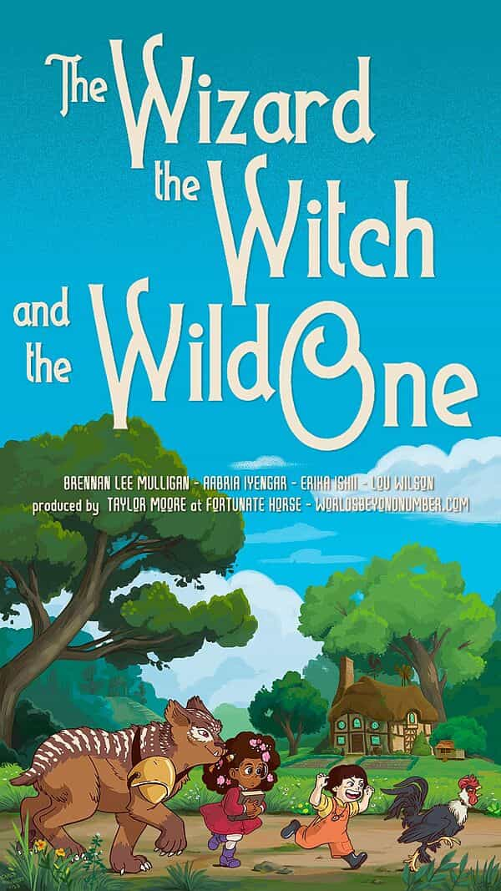

Official campaign art by Carly Monardo
The Children’s Adventure
The Children's Adventure is a Level 0 prequel to The Wizard, the Witch, and the Wild One. It plays through the events of the summer the three protagonists met and is focused on world- and character-building for that campaign.
It premiered on February 1, 2023, and ended on March 1, 2023. Episode 1 is available to the public, and the remaining 7 episodes are exclusive on the Patreon.